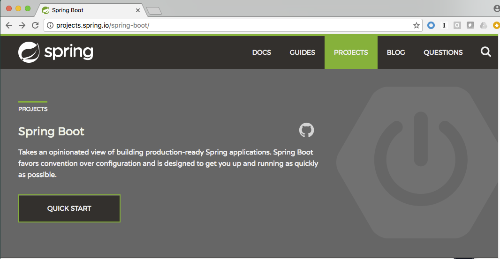
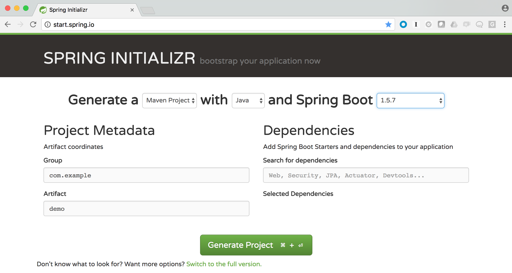
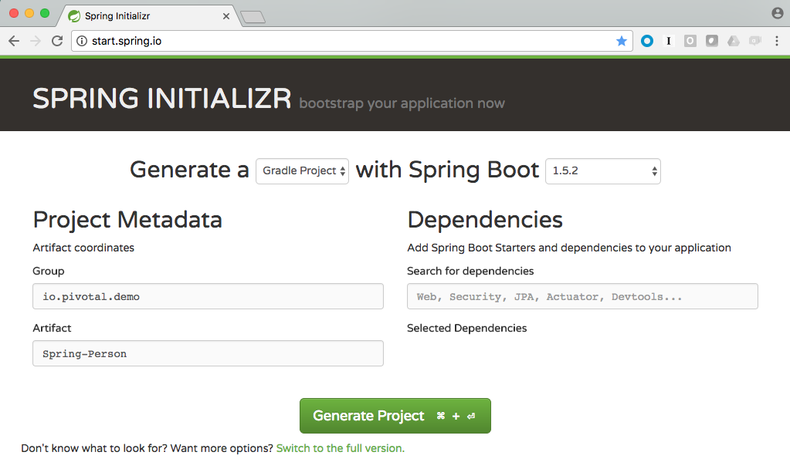
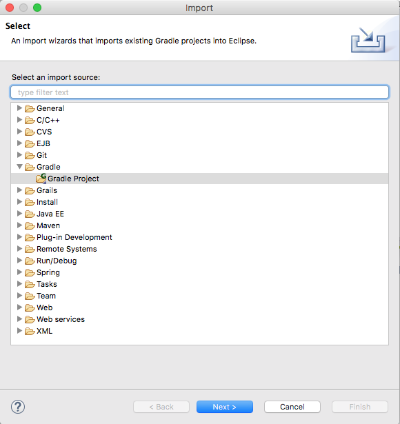
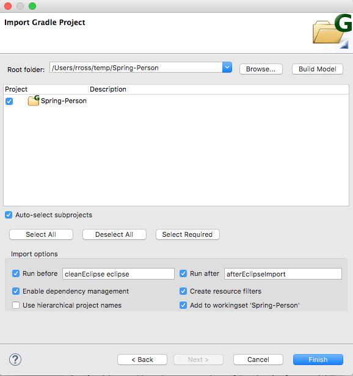
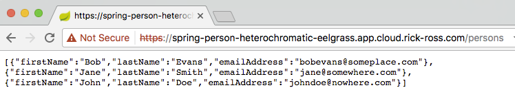
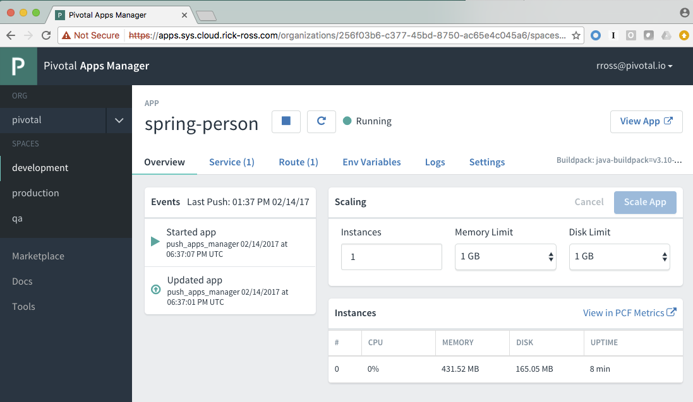
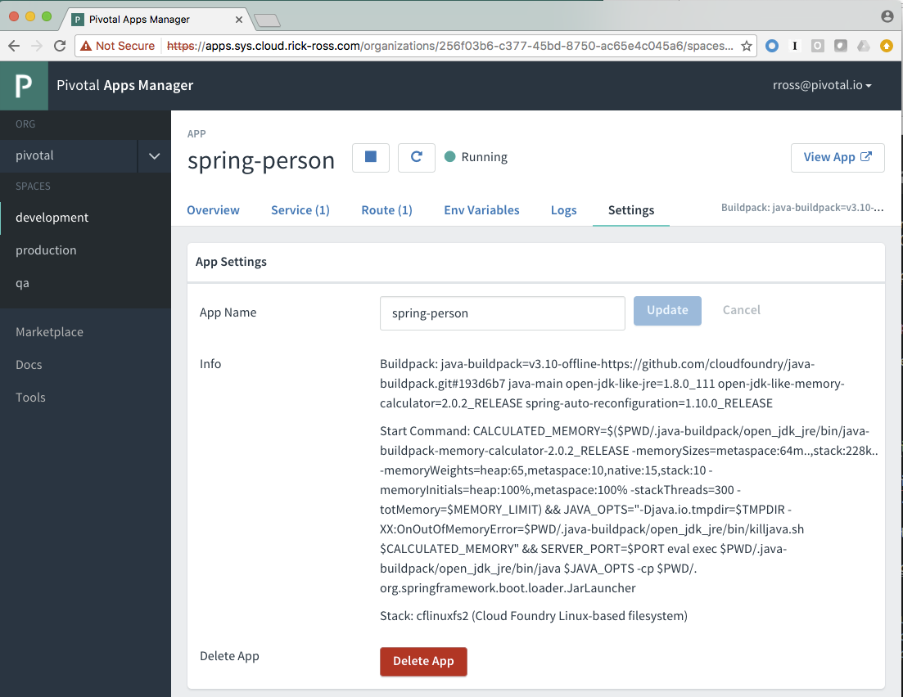
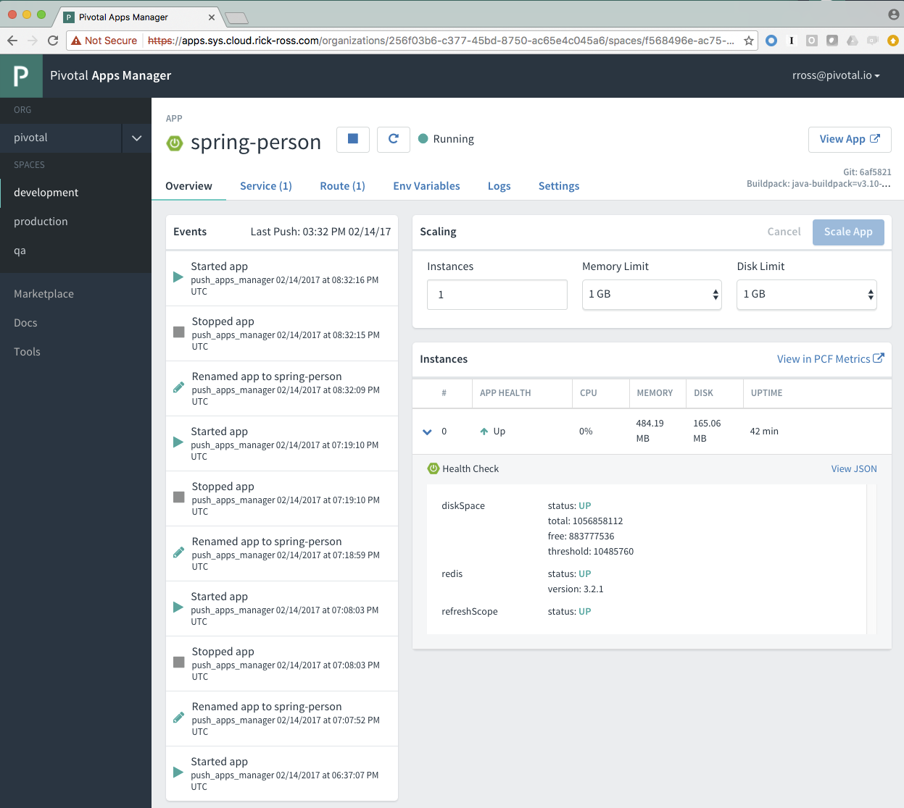
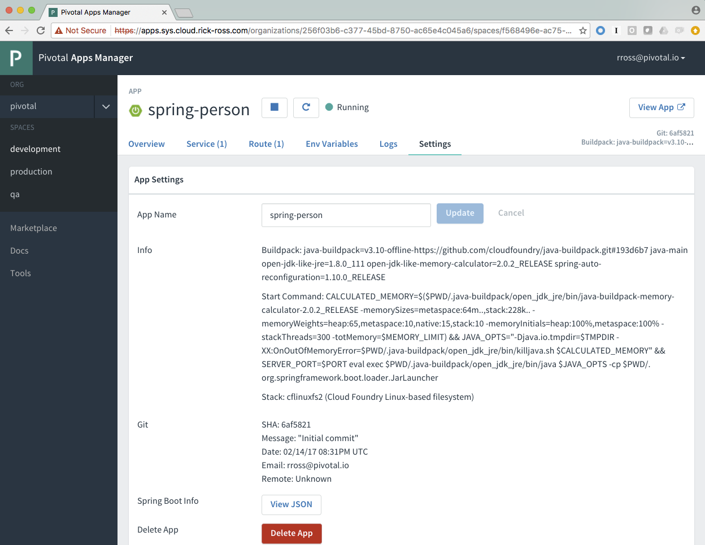

In this workshop, we will build a new Java REST application that is backed by Redis and push to Pivotal Cloud Foundry
Prerequisites
-
Spring Tool Suite or IntelliJ or Eclipse
-
Curl (Optional)
-
Git CLI for Windows or Git from github.com (Optional)
Part 1: Spring Boot
Spring Boot takes an opinionated view of building production-ready Spring applications. Favoring convention over configuration, it is designed to get you up and running as quickly as possible.
Spring Boot features include:
-
Creates a stand alone runnable jar file which includes everything required to run it
-
Ability to embed Tomcat, Jetty or Undertow making deployment much easier
-
Provide an oopinionated starter dependencies to simplify your configuration
-
Automatically configures Spring whenever possible
-
Provides production ready features such as metrics, health checks and externalized configuration
-
No code generation or XML configuration required
Exploring Spring Boot
-
Go to Spring Boot and explore
 -
How do you find the documentation for a specific version of Spring Boot?
Part 2: Spring Initializr
The easiest way to create your Spring Boot applications is to use Spring Initialzr. Spring Initializr makes is very easy to get started. It takes care of setting up your project by creating the necessary folder structure, the required project artifacts along with the dependencies and it creates a build file. By simply entering in some basic information, you can then download a Java project that is ready to be imported into your IDE of your choosing.
Exploring Spring Initializr
-
Go to start.spring.io and explore.
Notice the various options that are available.
-
What types of projects can be created?
-
What versions are supported?
-
What happens when you start typing in the Dependencies text box?
-
What does the full version look like?
-
What happens when you click on the Generate Project button?
-
How would you change the Java version you are targeting?
Part 3: Creating the project
In this seciton we will start the process of creating the application we will use in this workshop.
-
Go to start.spring.io
-
Generate a Maven Project with Spring Boot version 1.5.1
-
In the Project Metadata section
-
Under Group, enter: io.pivotal.demo or something similar. This will be your Java package name
-
Under Artitfact enter: Spring-Person or something similar. This will be the name of your Java App
 -
Under the Generate Project button, click the link to switch to the full version. We will now select the dependencies our application will have.
-
Under the Web Section, select
-
Web
-
Jersey (JAX-RS)
-
-
Scroll down to the SQL and select
-
JPA
-
-
Scroll down to the NoSQL section and select
-
Redis
-
-
Scroll down to the Cloud Core section and select
-
Cloud Connectors
-
-
Scroll down to the Cloud Discovery section and select
-
Cloud Foundry Discovery
-
-
Scroll down to the Ops section and select
-
Actuator
-
Actuator Docs
-
-
You are now ready generate the project so click the green "Generate Project" button. This will download your new Java project with the required dependencies for you. The downloaded file will be in a compressed (zip) file containing everything you need.
-
Importing into your IDE
-
Uncompress the zip file to a location of your choosing. Make sure it keeps the folder structure. Remeber this location as we’ll need it shortly.
-
Now start up your favorite Java IDE. Spring Tool Suite, IntelliJ and Eclipse are common choices.
-
The next step is to import the project you just uncompressed within your Java IDE. Look for an option to import an existing Maven project. Navigate to the folder and walk through the prompts. Note that the image below is captured from STS / Eclipse.
You might need to wait for the IDE to import the various dependencies. The image below shows the following progress indicator on the lower right portion of the IDE. Note that this is from STS / Eclipse.

Part 4:Build and Run your application
-
Build and Run your application in your IDE

-
Hmmm. The application didn’t start. Taking a look at the logs note the error:
2017-02-13 14:42:44.617 ERROR 11158 --- [ main] o.s.b.d.LoggingFailureAnalysisReporter : *************************** APPLICATION FAILED TO START *************************** Description: Cannot determine embedded database driver class for database type NONE Action: If you want an embedded database please put a supported one on the classpath. If you have database settings to be loaded from a particular profile you may need to active it (no profiles are currently active).The error provides a clue as to what is missing. Spring is attempting to instantiate an in-memory database and is not able to do so.
To fix this do the following:
-
Open up the SpringPersonApplication class in the io.pivotal.demo package.
-
Add the following imports
import org.springframework.boot.autoconfigure.EnableAutoConfiguration; import org.springframework.boot.autoconfigure.jdbc.DataSourceAutoConfiguration; import org.springframework.boot.autoconfigure.orm.jpa.HibernateJpaAutoConfiguration; -
And add the following annotation after the @SpringBootApplication but before the class definition:
@EnableAutoConfiguration(exclude = {DataSourceAutoConfiguration.class, HibernateJpaAutoConfiguration.class})This annotation tells Spring to disable auto configuration for Hibernate JPA data sources.
-
Save the class
-
Run the application. The application should start without any errors.
-
Open a browser to navigate to http://localhost:8080. Notice that by default, the application is protected with Basic Authentication. If you look in the output log, you’ll find the password which will look similar to this:
2017-02-13 14:58:42.090 INFO 11406 --- [ main] o.s.w.s.handler.SimpleUrlHandlerMapping : Mapped URL path [/**/favicon.ico] onto handler of type [class org.springframework.web.servlet.resource.ResourceHttpRequestHandler] 2017-02-13 14:58:42.482 INFO 11406 --- [ main] b.a.s.AuthenticationManagerConfiguration : Using default security password: xxxxxxxx-yyyy-zzzz-aaaa-bbbbbbbbbbbb 2017-02-13 14:58:42.522 INFO 11406 --- [ main] o.s.s.web.DefaultSecurityFilterChain : Creating filter chain: OrRequestMatcher [], [] 2017-02-13 14:58:42.581 INFO 11406 --- [ main] o.s.s.web.DefaultSecurityFilterChain : Creating filter chain: org.springframework.boot.actuate.autoconfigure.ManagementWebSecurityAutoConfiguration$LazyEndpointPathRequestMatcher@49f3ff41, [] -
Use user as the user name and the password found in your output logs to log in. You’ll see the following error:
So what just happened? We created a spring-initializer project with some dependencies, downloaded the project and then ran it. Under the covers, it is using Spring Boot. Spring Boot takes an opinionated view of building production-ready Spring applications. It favors convention over configuration and is designed to get you up and running very quickly.
The example application that we just ran included Tomcat as an application server because of the choices made when generating the project earlier.
-
What dependencies did spring boot include in the pom.xml file?
Disabling Security
Let’s disable the need for entering in a user name and password.
-
Edit the application.properties file. It is located in the src/main/resources folder.
-
Add the following line to the file
security.ignored=/**
-
Save the file
-
Build and run the application. (Make sure you stop the running application first)
-
Open a Browser and navigate to http://localhost:8080
Notice that now you are not prompted to log in to view the website.
So what just happened? We effectively told the Security subsystem not to require security for anything under the top level folder. In a more sophisticated application there would be more rules to define where security is and is not required.
Part 5: Adding Functionality
In this section, we will continue to add additional capabilities to our application.
Adding Domain Object
The first step of enhancing our application is by adding a domain object. This object represents the information we want to store within a repository later on.
-
Create a new Java Class called Person in the io.pivotal.demo.domain package
-
This class will have 3 properties: firstName, lastName, and emailAddress. Use the following code snippet for the class:
import org.springframework.data.annotation.Id; import org.springframework.data.redis.core.RedisHash; @RedisHash("persons") public class Person { private String firstName; private String lastName; private @Id String emailAddress; public Person() { } public Person(String firstName, String lastName, String emailAddress) { this.firstName = firstName; this.lastName = lastName; this.emailAddress = emailAddress; } public String getFirstName() { return firstName; } public void setFirstName(String firstName) { this.firstName = firstName; } public String getLastName() { return lastName; } public void setLastName(String lastName) { this.lastName = lastName; } public String getEmailAddress() { return emailAddress; } public void setEmailAddress(String emailAddress) { this.emailAddress = emailAddress; } @Override public String toString() { return "Person [firstName=" + firstName + ", lastName=" + lastName + ", emailAddress=" + emailAddress + "]"; } } -
Save the file
Creating a Repostiory
Next let’s create a repository to store the Person information from the Person class we created above.
-
Create a new Java Interface called PersonRepository in the io.pivotal.demo.repository package. This interface will extend the CrudRepository interface and Spring with provide an implementation with all of the necessary methods at runtime. Additional methods not provided by CrudRepository could be declared here as well, but that is not necessary for this example.
-
Use the snippet below to create the contents of this class:
import org.springframework.data.repository.CrudRepository; import io.pivotal.demo.domain.Person; public interface PersonRepository extends CrudRepository<Person, String> { } -
Save the file
Sample Data
In order to test our services, it would be helpful to have some data pre-populated at startup. Let’s create some sample data to load into the repository.
-
Create a new file called persons.json in the src/main/resources folder
-
Edit the contents of this file to contain the following. Feel free to add additional entries if you would like.
[ { "_class": "io.pivotal.demo.domain.Person", "emailAddress" : "johndoe@nowhere.com", "firstName" : "John", "lastName" : "Doe" }, { "_class": "io.pivotal.demo.domain.Person", "emailAddress" : "jane@somewhere.com", "firstName" : "Jane", "lastName" : "Smith" }, { "_class": "io.pivotal.demo.domain.Person", "emailAddress" : "bobevans@someplace.com", "firstName" : "Bob", "lastName" : "Evans" } ] -
Save the file
Creating a Repository Configuration
We have created a repository and some data, but we need to tell Spring how to actually populate the repository with the file.
-
Create a new Java Class called RepoConfig in the io.pivotal.demo.config package
-
Edit the contents of this file to contain the following:
import org.springframework.context.annotation.Bean; import org.springframework.context.annotation.Configuration; import org.springframework.core.io.ClassPathResource; import org.springframework.core.io.Resource; import org.springframework.data.redis.repository.configuration.EnableRedisRepositories; import org.springframework.data.repository.init.Jackson2RepositoryPopulatorFactoryBean; @Configuration @EnableRedisRepositories public class RepoConfig { @Bean public Jackson2RepositoryPopulatorFactoryBean repositoryPopulator() { Resource sourceData = new ClassPathResource("persons.json"); Jackson2RepositoryPopulatorFactoryBean factory = new Jackson2RepositoryPopulatorFactoryBean(); // Set a custom ObjectMapper if Jackson customization is needed factory.setResources(new Resource[] { sourceData }); return factory; } } -
Save the file
This RepoConfig class is used to create a new repository populator object based on Jackson - a library that can be used to parse JSON into Java objects. This populator will read the persons.json file created previously, parse it into Person objects, and store them in Redis.
This class also uses an annontation '@EnableRedisRepositories' that tells Spring that the repo uses a Redis datastore, and to look for a connection.
Creating REST Endpoints
Now that we have a domain object, and some sample data, the next step is to add REST endpoints that provide an API for manipulating the data.
-
Create a new Java Class called PersonController in the io.pivotal.demo.controller package
-
Edit the contents of this file to contain the following:
import javax.validation.Valid; import io.pivotal.demo.domain.Person; import org.springframework.beans.factory.annotation.Autowired; import org.springframework.data.repository.CrudRepository; import org.springframework.web.bind.annotation.PathVariable; import org.springframework.web.bind.annotation.RequestBody; import org.springframework.web.bind.annotation.RequestMapping; import org.springframework.web.bind.annotation.RequestMethod; import org.springframework.web.bind.annotation.RestController; @RestController @RequestMapping(value = "/persons") public class PersonController { private CrudRepository<Person, String> repository; @Autowired public PersonController(CrudRepository<Person, String> repository) { this.repository = repository; } @RequestMapping(method = RequestMethod.GET) public Iterable<Person> persons() { return repository.findAll(); } @RequestMapping(method = RequestMethod.PUT) public Person add(@RequestBody @Valid Person person) { return repository.save(person); } @RequestMapping(method = RequestMethod.POST) public Person update(@RequestBody @Valid Person person) { return repository.save(person); } @RequestMapping(value = "/{emailAddress:.+}", method = RequestMethod.GET) public Person getById(@PathVariable String emailAddress) { return repository.findOne(emailAddress); } @RequestMapping(value = "/{emailAddress:.+}", method = RequestMethod.DELETE) public void deleteById(@PathVariable String emailAddress) { repository.delete(emailAddress); } } -
Save the File
What does this class do? First, it defines a @RestController located at the /persons URI. When running, this means the URL would be http://spring-persons-xxx.my-cf-domain.com/persons.
Inside of this class, the constructor is annotated with the @Autowired attribute which let’s Spring know it will be constructing this class on our behalf. That way, we can determine later what CrudRepository we want to use. In our case, we only have one implementation, but you could add a MySQL or HSQL or another implmentation at a later date if you wanted to.
Then we have various methods that are annotated with a specific @RequestMapping annotation that indicates when this method should be called. For example, in the case of the Iterable method, it returns a Iterator over a collection of Persons. Similarly there are other methods that allow you to find an person by email address (getById() using an HTTP GET), add a new person (add() using HTTP PUT), updating a person (update() using HTTP POST) and deleting a person (deleteById() using HTTP DELETE).
Another interesting thing to note here is that there are annotations that map a Request Body (@RequestBody) to a Person instance. So in the case of the update() method, when sending a request to update, Spring is expecting to find a Person object in the request body, pulls it out , creates a Person object and calls the update method. It is taking care of the usual work of parsing the body, deserializing the parameters, validating them and then constructing the object required.
Validate that the other endpoints work by using a REST tool like curl or a browser plugin to add, retrieve, update, and delete a person from your repository.
Part 6: Running on Pivotal Cloud Foundry
Now that the application has all the necessary features completed, it is time to push to Pivotal Cloud Foundry and bind to Redis as a backing store.
Pushing to Pivotal Cloud Foundry
Before we deploy to cloud foundry there are a few things that need to occur.
-
If you haven’t already, download the latest release of the Cloud Foundry CLI from CF CLI for your operating system and install it.
-
Set the API target for the CLI: (this information will be provided to you in the workshop)
$ cf api https://api.sys.cloud.rick-ross.com --skip-ssl-validation
-
Login to Pivotal Cloudfoundry:
$ cf login
-
Follow the prompts, using the username & password provided to you during the workshop.
-
Build the application jar file
$ cd <location of your project> $ ./mvnw clean package -DskipTestsThis creates a self-contained Jar file for the application in the target folder. As an alternative, you can create the jar file within your IDE. For the purposes of this example, it is assumed that the location of the jar file is in the target folder.
Notice the -DskipTest argument which tells Maven that it should not run the unit tests. The reason we are using specifying this is because running the tests locally will fail because it will not be able to locate a local Redis repository.
-
Push the application using the following command line
$ cf push spring-person --no-start --random-route -p target/Spring-Person-0.0.1-SNAPSHOT.jar Creating app spring-person in org pivotal / space development as rross@pivotal.io... OK Creating route spring-person-commemoratory-isogeny.app.cloud.rick-ross.com... OK Binding spring-person-commemoratory-isogeny.app.cloud.rick-ross.com to spring-person... OK Uploading spring-person... Uploading app files from: /var/folders/mw/n4bhxvfn7wb4dw9rz8kznwcw0000gp/T/unzipped-app029402170 Uploading 24.4M, 187 files Done uploading OKThis command uploads the application to Pivotal Cloud Foundry, and does not start it because we still need to set up a Redis service.
-
Browse the Marketplace
$ cf marketplace Getting services from marketplace in org pivotal / space development as rross@pivotal.io... OK service plans description app-autoscaler standard Scales bound applications in response to load (beta) p-circuit-breaker-dashboard standard Circuit Breaker Dashboard for Spring Cloud Applications p-config-server standard Config Server for Spring Cloud Applications p-mysql 100mb MySQL databases on demand p-rabbitmq standard RabbitMQ is a robust and scalable high-performance multi-protocol messaging broker. p-redis shared-vm, dedicated-vm Redis service to provide a key-value store p-service-registry standard Service Registry for Spring Cloud Applications TIP: Use 'cf marketplace -s SERVICE' to view descriptions of individual plans of a given service.Notice that there is a Redis service we can use. It is called "p-redis" and there are two plans: dedicated-vm and shared-vm.
-
Create a Redis service using the shared-vm plan
$ cf create-service p-redis shared-vm SpringPersonRedis OK -
Bind the application to this service
$ cf bind-service spring-person SpringPersonRedis OK TIP: Use 'cf restage spring-person' to ensure your env variable changes take effect -
Start the application
$ cf start spring-person Starting app spring-person in org pivotal / space development as rross@pivotal.io... Downloading binary_buildpack... Downloading ruby_buildpack... Downloading python_buildpack... Downloading nodejs_buildpack... Downloading go_buildpack... Downloaded ruby_buildpack Downloading staticfile_buildpack... Downloaded binary_buildpack Downloading java_buildpack_offline... Downloaded nodejs_buildpack Downloaded go_buildpack Downloading php_buildpack... Downloaded python_buildpack Downloading dotnet_core_buildpack... Downloaded staticfile_buildpack Downloaded dotnet_core_buildpack Downloaded php_buildpack Downloaded java_buildpack_offline Creating container Successfully created container Downloading app package... Downloaded app package (37.3M) Staging... -----> Java Buildpack Version: v3.10 (offline) | https://github.com/cloudfoundry/java-buildpack.git#193d6b7 -----> Downloading Open Jdk JRE 1.8.0_111 from https://java-buildpack.cloudfoundry.org/openjdk/trusty/x86_64/openjdk-1.8.0_111.tar.gz (found in cache) Expanding Open Jdk JRE to .java-buildpack/open_jdk_jre (1.1s) -----> Downloading Open JDK Like Memory Calculator 2.0.2_RELEASE from https://java-buildpack.cloudfoundry.org/memory-calculator/trusty/x86_64/memory-calculator-2.0.2_RELEASE.tar.gz (found in cache) Memory Settings: -XX:MetaspaceSize=104857K -XX:MaxMetaspaceSize=104857K -Xss349K -Xmx681574K -Xms681574K -----> Downloading Spring Auto Reconfiguration 1.10.0_RELEASE from https://java-buildpack.cloudfoundry.org/auto-reconfiguration/auto-reconfiguration-1.10.0_RELEASE.jar (found in cache) Exit status 0 Staging complete Uploading droplet, build artifacts cache... Uploading build artifacts cache... Uploading droplet... Uploaded build artifacts cache (109B) Uploaded droplet (82.4M) Uploading complete Destroying container Successfully destroyed container 0 of 1 instances running, 1 starting 0 of 1 instances running, 1 starting 0 of 1 instances running, 1 starting 1 of 1 instances running App started OK App spring-person was started using this command `CALCULATED_MEMORY=$($PWD/.java-buildpack/open_jdk_jre/bin/java-buildpack-memory-calculator-2.0.2_RELEASE -memorySizes=metaspace:64m..,stack:228k.. -memoryWeights=heap:65,metaspace:10,native:15,stack:10 -memoryInitials=heap:100%,metaspace:100% -stackThreads=300 -totMemory=$MEMORY_LIMIT) && JAVA_OPTS="-Djava.io.tmpdir=$TMPDIR -XX:OnOutOfMemoryError=$PWD/.java-buildpack/open_jdk_jre/bin/killjava.sh $CALCULATED_MEMORY" && SERVER_PORT=$PORT eval exec $PWD/.java-buildpack/open_jdk_jre/bin/java $JAVA_OPTS -cp $PWD/. org.springframework.boot.loader.JarLauncher` Showing health and status for app spring-person in org pivotal / space development as rross@pivotal.io... OK requested state: started instances: 1/1 usage: 1G x 1 instances urls: spring-person-heterochromatic-eelgrass.app.cloud.rick-ross.com last uploaded: Mon Feb 13 21:41:03 UTC 2017 stack: cflinuxfs2 buildpack: java-buildpack=v3.10-offline-https://github.com/cloudfoundry/java-buildpack.git#193d6b7 java-main open-jdk-like-jre=1.8.0_111 open-jdk-like-memory-calculator=2.0.2_RELEASE spring-auto-reconfiguration=1.10.0_RELEASE state since cpu memory disk details #0 running 2017-02-13 04:42:12 PM 0.0% 287M of 1G 165M of 1G -
Open a browser and go to the URL indicated in the urls: line above, with "/persons" appended to the end of it. In this case the url is https://spring-person-heterochromatic-eelgrass.app.cloud.rick-ross.com/persons

Now we have an application that runs on Pivotal Cloud Foundry.
Creating a Manifest
To make it easier to push updates to Pivotal Cloud Foundry, let’s create a manifest file.
-
Create a file called manifest.yml and put it in the same folder that contains the pom.xml file.
-
Edit the contents of this file to contain the following:
--- applications: - name: spring-person memory: 1G random-route: true path: target/Spring-Person-0.0.1-SNAPSHOT.jar services: - SpringPersonRedisNote that the Name of the Service needs to match the service you created previously. In this case it is SpringPersonRedis.
-
Save the file
-
Push the application again this time with no arguments
$ cf push -
Open a browser and navigate to the /persons URL to verify the applicaiton is working
Part 7: Testing the other REST endpoints (Optional)
If you have curl installed, you can add, retrieve, update and delete records using the REST API that we created. The sections below walk you through the process of using those APIs. Note that the URLs in this seciton are using HTTP and not HTTPS.
Adding a New Record
$ curl -H "Content-Type: application/json" -X PUT -d '{"firstName":"My","lastName":"Name","emailAddress":"myname@example.com"}' http://<your application URL goes here>/personsRetrieving a Record
$ curl -H "Content-Type: application/json" -X GET http://<your application URL goes here>/persons/myname%40example.comPart 8: Actuator
Remember earlier, when we selected dependencies for this project? We chose the Actuator and Actuator Docs dependencies. In this section, we’ll explore what Actuators are and how to use them.
One thing that all applicaitons have in common is the need to monitor and manage them.
Actuator Endpoints
Spring Boot includes a number of built-in actuator endpoints that enable you to montior and interact with your application. Most endpoints are exposed via HTTP although other methods are available.
The most common endpoints are shown below:
-
health - Lists application health information
-
beans - Displays a list of all Spring Beans
-
info - Displays arbitrary application information
It’s important to note that not all endpoints are always on due to potential security concerns. Later on, we’ll change the behavior and enable endpoints.
For a list of all of the available endpoints see this link
-
What happens when you go to your application’s /health endpoint in a browser? (e.g. http://<your application URL goes here>/health)
-
What happens when you go to your application’s /docs endpoint?
-
What happens when you go to your application’s /info endpoint?
-
What happens when you go to your application’s /autoconfig endpoint?
-
What happens when you go to your application’s /beans endpoint?
Unlocking Protected Endpoints
In Spring Boot 1.5 and above, all actuator endpoints, with the exception of /health and /info are secured by default. Let’s make a change to our application to make the other endpoints visible.
-
Edit the application.properties file. It is located in the src/main/resources folder.
-
Add the following line to the file
endpoints.sensitive=false
-
Save the file
-
Build the application jar file
$ cd <location of your project> $ ./mvnw clean package -DskipTests -
Push the application to Pivotal Cloud Foundry
$ cf push
Let’s hit a few of the endpoints that gave errors before.
-
What happens when you visit the /beans endpoint?
-
What happens when you visit the /autoconfig endpoint?
Try a few more of the endpoints and become familiar with the type of information they provide. Note that the output is in JSON format so using a JSON pretty printer like this one is very helpful to make the output more readible.
Actuator Integration with Pivotal Cloud Foundry
Starting in Pivotal Cloud Foundry 1.9 and above, the Pivotal Apps Manager provides additional functionality for Spring Boot applications 1.5 and higher. In order to take advantage of these capabilities, let’s take a look at the application details in Apps Manager before we explore the additional capabilities.
-
Open the Apps Manager in a browser
-
Navigate to the Org and Space you are deploying the application to
-
Click on spring-person application and the following screen appears:
 -
Navigate into the Settings tab and notice the entries that are listed
-
App Name
-
Info

-
Adding Git Information (Optional)
This step requires that you have installed git on your computer. You will need to be able to create a local repository in order for this step to work.
-
Edit the pom.xml file. It is located in the root folder of the project.
-
Navigate down to the plugin section. Add the following snippet below the existing spring-boot-maven-plugin
<plugin> <groupId>pl.project13.maven</groupId> <artifactId>git-commit-id-plugin</artifactId> </plugin>
-
Save the file
-
Edit the application.properties file. It is located in the src/main/resources folder.
-
Add the following line to the end of the file
management.info.git.mode=full
These changes that we added to the project adds Git information to the /info endpoint. For additional details visit this link
By adding these configuration changes (specifically the git commit plugin XML) you are indicating that your application has a git repository. Since we have started from scratch, let’s create a git repository.
Note: Failure to create a git repository will result in a build error.
-
Open up a Command prompt or terminal window
-
Change directories to the location of your application
-
Run the following Git commands to initialize, add files and commit to the local repository
$ git init $ git add .gitignore manifest.yml mvnw mvnw.cmd pom.xml src/ $ git commit -m 'Initial commit'
Adding Additional Information into Apps Manager
Let’s make a few minor changes to our application to expose additional details.
-
Edit the pom.xml file. It is located in the root folder of the project
-
Navigate down to the plugin section. Add the following snippet below the artifactId for spring-boot-maven-plugin
<executions> <execution> <goals> <goal>build-info</goal> </goals> </execution> </executions>The full section should look like this without the git entry.
<build> <plugins> <plugin> <groupId>org.springframework.boot</groupId> <artifactId>spring-boot-maven-plugin</artifactId> <executions> <execution> <goals> <goal>build-info</goal> </goals> </execution> </executions> </plugin> </plugins> </build>With the optional Git Information, this section looks like this
<build> <plugins> <plugin> <groupId>org.springframework.boot</groupId> <artifactId>spring-boot-maven-plugin</artifactId> <executions> <execution> <goals> <goal>build-info</goal> </goals> </execution> </executions> </plugin> <plugin> <groupId>pl.project13.maven</groupId> <artifactId>git-commit-id-plugin</artifactId> </plugin> </plugins> </build> -
Save the file
-
Edit the application.properties file. It is located in the src/main/resources folder.
-
Add the following line to the end of the file
management.cloudfoundry.skip-ssl-validation=true info.app.version.java=@java.version@ info.app.version.spring=@spring.version@
The first line is only necessary if your Pivotal Cloud Foundry instance is using a self-signed certificate.
You can also include information from Git which we won’t do in this workshop. For additional details see this link
-
Save the file
-
Build the application jar file
$ cd <location of your project> $ ./mvnw clean package -DskipTests -
Push the application to Pivotal Cloud Foundry
$ cf push -
Go back to the Apps Manager, navigate to the Space and click on spring-person.
-
Click the View App link
-
Accept the SSL Security Warnings
-
Go back to Apps Manager and reload the page
Notice the Spring Logo to the left of the application name. This indicates that Apps Manager has recognized this as a Spring Boot application.
If you followed the optional Git Information steps above, you’ll see at the top right, a Git Commit ID
Expanding the arrow next to the left of each application instance reveals the health check details, showing you details like the Redis health along with other basic metrics.
-
Navigate to the Settings tab
Notice the additional entries for Git and Spring Boot information where you can view the JSON
Note that currently some information is only shown if the Git information has been included.